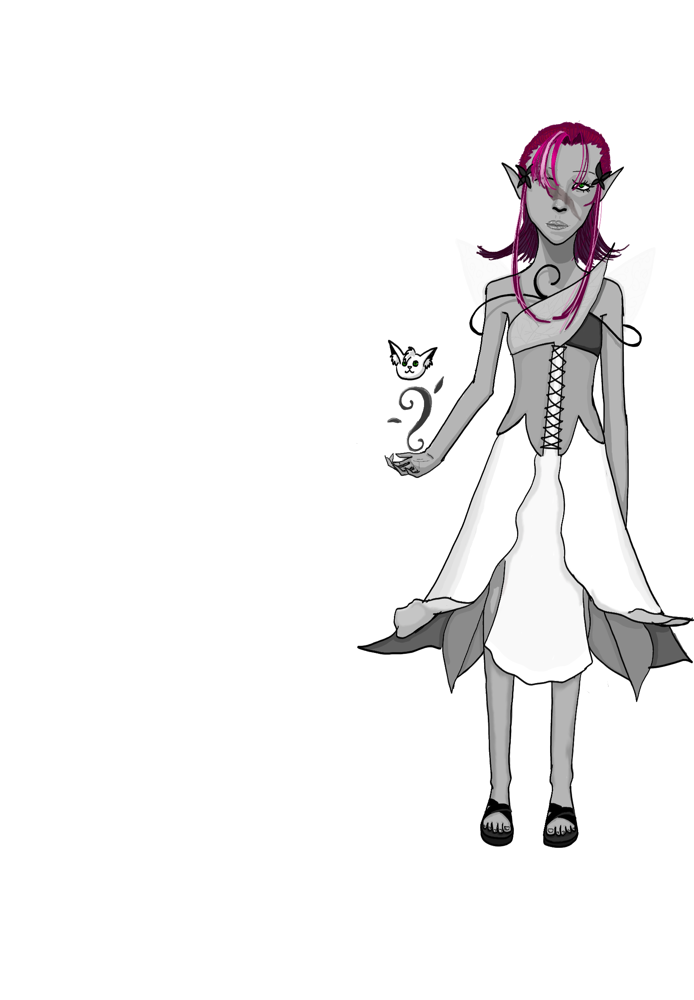

Home
Aithlin
Name:
Aithlin
Last name:
Cinderleaf
Age:
40
Genre:
Fantasy
Species:
Elf
Details: How I got my scar?
Long story short: When i was fleeing the fire the warrior elfs started. You want more details? Fine. Elfrane and her army was hunting us through the forest, and of course, they were faster then us.
So I made a stupid plan on the spot. I hastly told it to the oldest of us and then I started counting down. I screamed and we all halted suddenly. We took the warriors by suprise with this move so they abruply came to a stop.
I thought foolishly that with our magic we would be able to stop them long enough so the youngsters could escape. But I was wrong. Even with veins and threes attacking them they made it to us in seconds.
I still remember the horrifying screams of my comrads when the warriors plunged their swords into them. Elfrane personally came to me. I helplessly fought with my leaf coverd veins but she sliced me right across the face.
I don't even know how I surrvived...
Of course you would want to know if the others surrvived.
Not many but some of the more experienced ones did. Most of the youngsters were able to escape but unfortunately not all of them. We lost many in the fire too.
All thogheter we lost too many... We should have cooperated with the politic elves earlier. They too lost many elves.
Do we have animals?
Yes. My companion is a deer, a very small one with a light brown fur. But we help every animal in the forest. So we usualy get company from very many diffrent animal...Exept the mooses.
